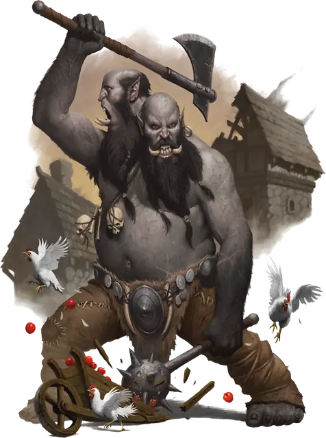

Эттин
Ettin
Большой Великан, Хаотичный Злой

Класс Защиты 12 Инициатива −1 (9)
Хиты 85 (10к10 + 30)
Скорость 40 футов
| мод | спас | ||
|---|---|---|---|
| СИЛ | 21 | +5 | +5 |
| ЛОВ | 8 | −1 | −1 |
| ТЕЛ | 17 | +3 | +3 |
| мод | спас | ||
|---|---|---|---|
| ИНТ | 6 | −2 | −2 |
| МДР | 10 | +0 | +0 |
| ХАР | 8 | −1 | −1 |
Иммунитеты Бессознательный, Испуганный, Оглохший, Ослеплённый, Очарованный, Ошеломлённый
Чувства Тёмное зрение 60 футов, пассивное Восприятие 14
Языки Великаний
Опасность 4 (1 100 опыта; БВ +2)
Действия
Мультиатака. Эттин совершает одну атаку Боевым топором и одну атаку Моргенштерном.
Боевой топор. Бросок рукопашной атаки: +7, досягаемость 5 фт. Попадание: 14 (2к8 + 5) Рубящего урона. Если цель — существо Большого размера или меньше, она становится Опрокинутой.
Моргенштерн. Бросок рукопашной атаки: +7, досягаемость 5 фт. Попадание: 14 (2к8 + 5) Колющего урона, и цель получает Помеху на следующий бросок атаки, который совершит до конца своего следующего хода.
Бонус мастерства +2
Среда обитания Горы, Подземье, Холмы
Сокровища Личные
Эттин
Вздорный двуглавый великан
Эттины — физически могучие великаны с двумя головами. Многие внешне напоминают холмовых великанов, но у других черты более звериные или диковинные: клыки, короткие рога или по одному глазу на каждой голове.
Эттины часто сбиваются в союзы с другими Великанами или с теми, кто ценит их силу: с холмовыми великанами, бандитами, ограми. Некоторые эттины мистически связаны с землями, где обитают, и могут знать или охранять тайны, дорогие друидам и Феям.
У каждой головы эттина — собственный нрав. Из-за этого некоторые эттины вечно грызутся сами с собой и с окружающими, но зато многие действуют слаженно, как одна команда. У головы может быть своё имя, а может, обе головы зовут себя единым существом — одним именем либо склейкой из двух.
Совершите бросок по таблице «Взаимодействия эттинов» или определите сами, чем заняты головы эттина при встрече.
Взаимодействия эттинов
| 1к8 | Головы эттина… |
| 1 | Подначивают друг друга, готовясь к стычке или испытанию. |
| 2 | Спорят о планах на битву, на ужин или как провести день. |
| 3 | Критикуют друг друга, занимаясь каждая своим делом. |
| 4 | Играют в гляделки. |
| 5 | Обмениваются любезностями, будто знакомятся впервые. |
| 6 | Подчёркнуто игнорируют друг друга. |
| 7 | Наперебой обсуждают всё более запутанную задумку. |
| 8 | Стараются не дать друг другу заснуть. |